한 장의 이미지를 기준으로 카메라 위치와 바라보는 방향을 지정해, 같은 장면을 다른 시점에서 본 것처럼 생성하는 기능입니다. 사용자는 이미지 위에 원으로 카메라 위치를 표시하고, 화살표로 촬영 방향을 지정합니다. AI는 그 표시를 해석해 새로운 카메라 앵글의 포토리얼 이미지를 만듭니다.
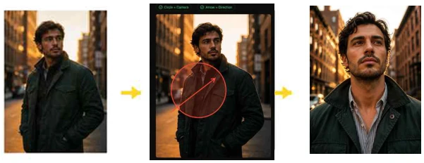
다시 촬영하거나 3D 세트를 새로 만들지 않아도, 같은 인물과 장면을 다른 시점으로 빠르게 테스트할 수 있기 때문입니다. 콘티·광고 컷·룩북·영상 프리비즈처럼 앵글 후보를 여러 개 비교해야 할 때 제작 시간을 크게 줄여줍니다.
한 장의 원본만 있으면 같은 인물·장면을 여러 카메라 앵글로 변환해 비교할 수 있습니다. 모델·로케이션을 다시 부르지 않고도 시안을 확장할 수 있습니다.
물리 세트나 3D 모델링을 만들지 않고도 시점을 바꿀 수 있어, 프리프로덕션 단계의 컨셉 검증 비용이 크게 줄어듭니다.
정면 컷을 로우앵글이나 측면 느낌으로 바꾸고 싶을 때, 인물/제품 컷의 카메라 위치를 바꿔보고 싶을 때 사용합니다. 장면의 분위기는 유지하면서 더 역동적인 컷을 찾거나, 클라이언트에게 여러 앵글 후보를 보여줘야 할 때 적합합니다.
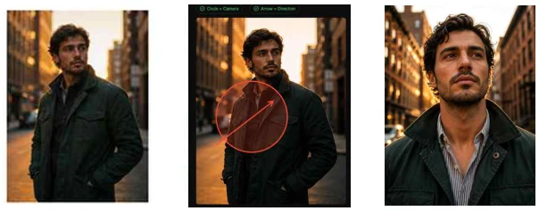
한 장면을 로우·하이·측면 앵글로 빠르게 변환해 콘티 검토 라운드를 단축합니다.
모델·제품 컷의 카메라 위치를 바꿔 정면·사선·측면 후보를 한 번에 만들어 비교합니다.
같은 의상·인물의 컷을 다양한 앵글로 확장해 룩북 페이지를 풍성하게 구성합니다.
본촬영 전 카메라 위치 후보를 시각화해 감독·촬영팀과 합의를 빠르게 진행합니다.
정면 제품 컷을 측면·후면 느낌으로 변환해 상세 페이지 후보 컷을 확보합니다.
여러 앵글 후보를 한 번에 정리해 클라이언트 의사결정 라운드를 단축합니다.
왼쪽 세로 메뉴에서 원형 화살표 모양 아이콘을 클릭합니다. 해당 메뉴가 SpinAngle 기능입니다.
화면 좌측 세로 메뉴 영역에 기능별 아이콘이 정렬되어 있습니다. 이 중 원형 화살표 모양 아이콘이 SpinAngle 진입점입니다.
아이콘을 클릭하면 SpinAngle 작업 화면이 열립니다. 상단에 SpinAngle 제목과 “Draw a circle to mark the camera position and an arrow to indicate the direction.” 안내 문구가 표시됩니다.
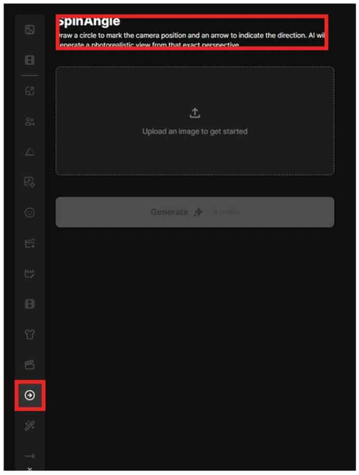
처음에는 Upload an image to get started 영역이 표시됩니다. 이 영역을 클릭하거나 이미지를 드래그해 원본 이미지를 업로드합니다.
화면 중앙의 업로드 영역을 클릭하거나, 파일을 드래그&드롭해 원본 이미지를 등록합니다. 이미지가 등록되어야 카메라 위치·방향을 표시할 수 있습니다.
이미지가 없는 상태에서는 카메라 위치와 방향을 지정할 수 없으므로 Generate 버튼이 비활성화되어 있습니다.
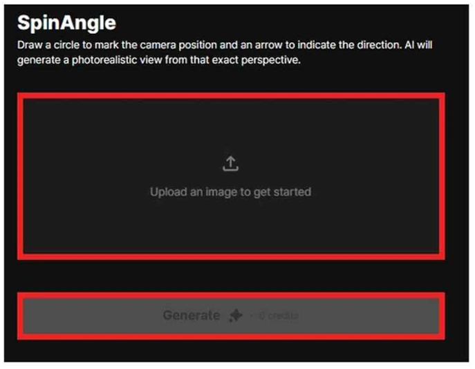
원본 이미지를 업로드하면 왼쪽 캔버스에 이미지가 표시되고, 아래에 Circle, Arrow, Clear, New Image 버튼이 나타납니다.
업로드 영역에 파일을 드래그하거나 클릭해 이미지를 선택합니다. 업로드가 완료되면 캔버스에 이미지가 표시되고, 그 위에 카메라 위치·방향을 그릴 수 있는 상태가 됩니다.
이미지가 표시되면 캔버스 아래에 Circle, Arrow, Clear, New Image 도구 버튼이 함께 나타나 카메라 위치·방향 작업을 시작할 수 있습니다.
인물이나 피사체가 또렷하게 보이는 이미지일수록 새로운 시점 생성이 안정적입니다. 과한 모션블러·심한 노이즈·복잡한 배경은 결과 품질을 떨어뜨릴 수 있습니다.
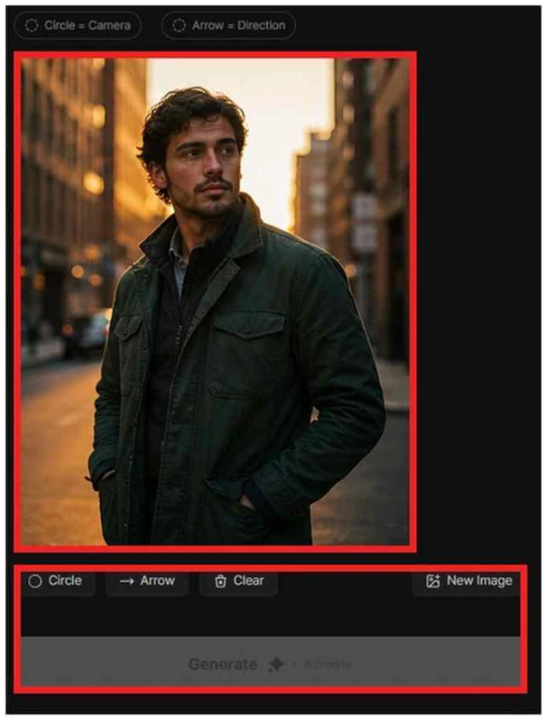
상단의 두 상태 표시 영역은 카메라 위치와 방향이 모두 지정되었는지 보여줍니다. 처음에는 비어 있는 상태이며, 원과 화살표를 각각 그리면 초록색 체크 표시로 바뀝니다.
캔버스에 원이 그려지면 Circle = Camera 상태가 초록색 체크로 표시됩니다. 카메라 위치가 등록되었다는 의미입니다.
화살표가 그려지면 Arrow = Direction 상태가 초록색 체크로 표시됩니다. 카메라가 바라볼 방향이 등록되었다는 의미입니다.
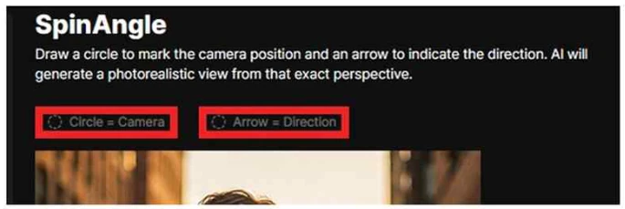
Circle 버튼을 선택한 뒤 이미지 위에 원을 그려 카메라가 놓일 위치를 표시합니다. 원은 새롭게 바라볼 시점의 기준점입니다.
하단 도구 모음에서 Circle 버튼을 클릭해 모드를 활성화합니다. 활성화되면 캔버스 위에서 원을 그릴 수 있는 상태가 됩니다.
이미지 위에서 드래그해 원을 그립니다. 이 원은 새로 바라볼 시점의 기준점으로, 피사체의 어느 쪽에서 촬영한 느낌을 낼지 생각하며 배치합니다.
원을 피사체의 왼쪽·오른쪽·위·아래 중 어디에 두느냐에 따라 결과 앵글이 달라집니다. “이 위치에 카메라가 있다”라고 상상하며 배치하면 의도한 결과에 가까워집니다.
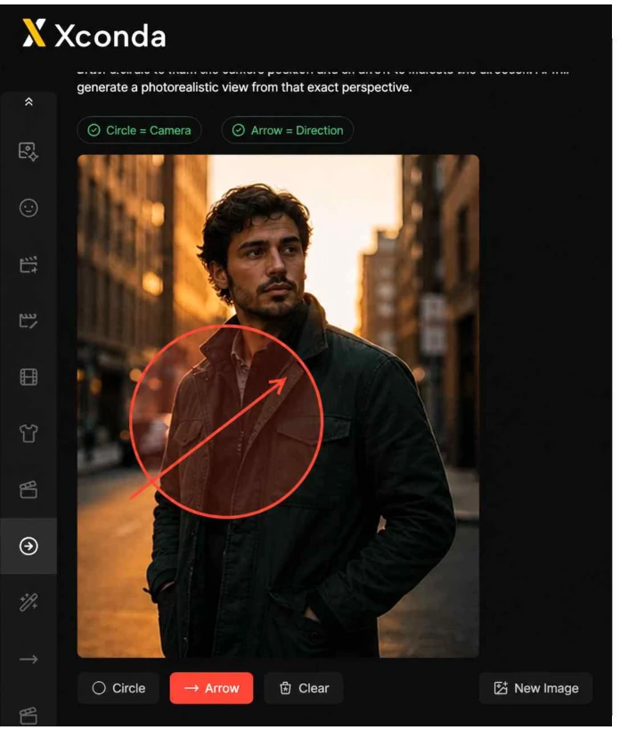
Arrow 버튼을 선택한 뒤 이미지 위에 화살표를 그려 카메라가 바라볼 방향을 지정합니다. 원과 화살표가 함께 있어야 새 시점을 계산할 수 있으므로, 두 요소를 모두 그린 뒤 Generate 버튼을 사용합니다.
하단 도구 모음에서 Arrow 버튼을 클릭해 모드를 활성화합니다. 활성화되면 캔버스 위에서 화살표를 그릴 수 있는 상태가 됩니다.
원에서 시작해 피사체 쪽으로 향하는 화살표를 그립니다. 이 화살표는 카메라가 바라보는 시선 방향을 의미하며, 결과 이미지의 구도 중심을 결정합니다.
원과 화살표가 함께 있어야 AI가 새 시점을 계산할 수 있습니다. 둘 다 그린 뒤 Generate를 누르세요. 하나만 있으면 Generate는 비활성 상태로 유지됩니다.
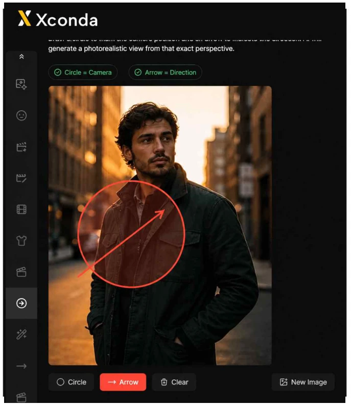
Circle은 카메라 위치 표시, Arrow는 시선 방향 표시, Clear는 그려진 표시를 초기화, New Image는 현재 원본 이미지를 교체하는 버튼입니다.
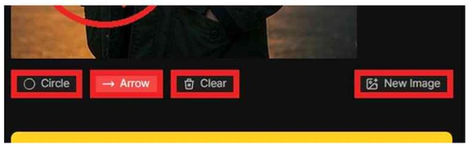
원을 그려 가상 카메라의 위치를 지정하는 도구입니다.
화살표를 그려 카메라가 바라볼 방향을 지정하는 도구입니다.
캔버스에 그려진 원과 화살표를 모두 지웁니다. 위치·방향을 다시 잡고 싶을 때 사용합니다. 원본 이미지는 그대로 유지됩니다.
New Image를 누르면 현재 원본 이미지를 교체해 다른 이미지로 다시 작업할 수 있습니다. 이전에 그린 원·화살표는 초기화됩니다.
카메라 위치와 방향이 모두 지정되면 Generate 버튼이 활성화됩니다. 현재 테스트 화면 기준으로 1회 생성에 6 credits가 사용됩니다.
상단의 Circle = Camera, Arrow = Direction 상태가 모두 초록 체크가 되어야 Generate가 활성화됩니다.
현재 테스트 화면 기준 1회 생성에 6 credits가 차감됩니다. 잔여 크레딧이 부족하면 생성이 진행되지 않습니다.
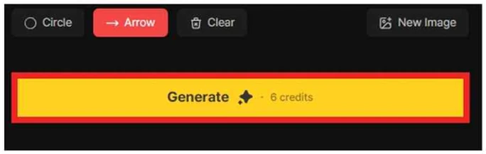
Generate를 누르면 “Would you like to generate an image?” 확인 팝업이 표시됩니다. OK를 누르면 실제 생성이 시작되고, Cancel을 누르면 이전 화면으로 돌아갑니다.
OK를 누르면 실제 생성이 시작되고 크레딧이 차감됩니다. 생성 중에는 결과 영역에 진행 상태가 표시됩니다.
Cancel을 누르면 생성하지 않고 이전 화면으로 돌아갑니다. 그려둔 원·화살표는 유지되어 바로 수정·재시도가 가능합니다.
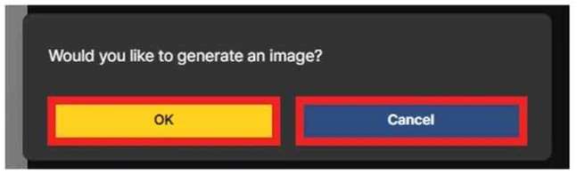
생성이 끝나면 오른쪽 결과 영역에 새 시점으로 만들어진 이미지가 카드 형태로 표시됩니다. 여러 번 생성하면 결과 카드가 오른쪽 영역에 누적되어 앵글 후보를 비교할 수 있습니다.
생성이 완료되면 오른쪽 결과 영역에 결과 카드가 하나 추가됩니다. 카드 우하단에 다운로드·삭제 아이콘이 함께 표시됩니다.
여러 번 생성하면 결과 카드가 누적되어 같은 장면의 다양한 앵글 후보를 한 화면에서 비교할 수 있습니다.
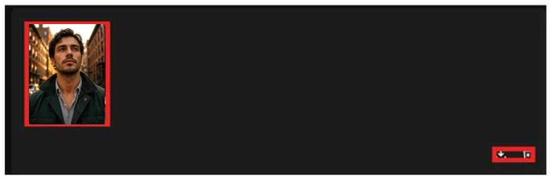
결과 이미지는 원본 인물의 분위기를 유지하면서, 사용자가 표시한 카메라 위치와 방향을 반영한 새로운 앵글로 생성됩니다. 최종 사용 전에는 얼굴·의상·배경 왜곡과 피사체의 방향감이 의도와 맞는지 확인합니다.
결과 이미지는 원본 인물의 전체적인 분위기·톤·색감을 유지합니다. 시점만 바뀌고 장면의 무드는 일관성을 유지합니다.
사용자가 그린 원의 위치와 화살표 방향이 새로운 카메라 앵글로 반영됩니다. 결과는 100% 동일하지 않을 수 있으므로 여러 번 생성해 가장 적합한 컷을 선택합니다.
최종 사용 전에는 얼굴·의상·배경의 왜곡과 피사체의 시선·자세 방향이 의도와 맞는지 확인합니다. 어색한 부분이 있으면 원·화살표 위치를 조정해 재생성합니다.
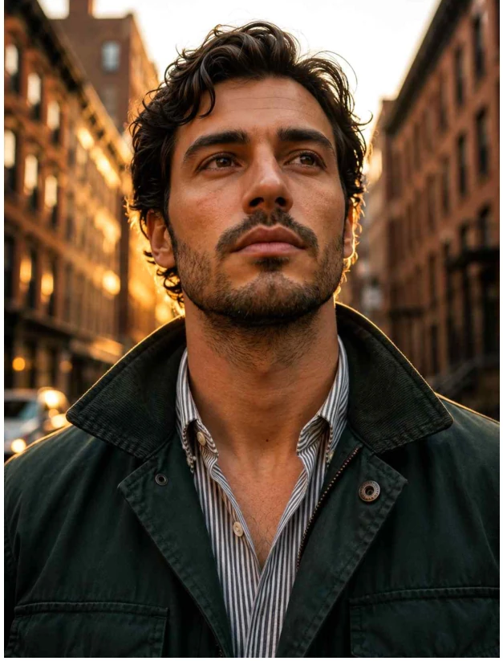
결과 카드 오른쪽 아래에는 다운로드 아이콘과 삭제 아이콘이 표시됩니다. 다운로드 아이콘은 생성 결과를 저장하고, 삭제 아이콘은 선택한 결과를 목록에서 제거할 때 사용합니다.
다운로드 아이콘을 누르면 해당 결과 이미지가 로컬 파일로 저장됩니다. 최종 채택 시안을 외부에서 사용할 때 이 버튼을 사용합니다.
삭제 아이콘은 선택한 결과 카드를 목록에서 제거합니다. 불필요한 후보를 정리해 결과 영역을 깔끔하게 유지할 수 있습니다.
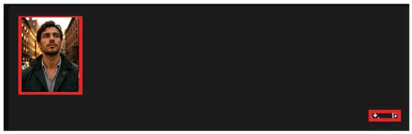
삭제 아이콘을 누르면 “Are you sure you want to delete all selected media?” 확인 팝업이 표시됩니다. OK를 누르면 삭제되고, Cancel을 누르면 결과가 그대로 유지됩니다.
OK를 누르면 선택한 결과 카드가 실제로 삭제됩니다. 삭제된 결과는 복구되지 않으므로 신중히 결정합니다.
Cancel을 누르면 결과가 그대로 유지됩니다. 다른 앵글 후보와 비교가 끝나기 전까지는 일단 보관해 두는 편이 안전합니다.
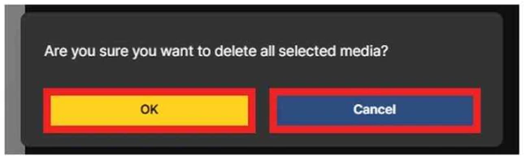